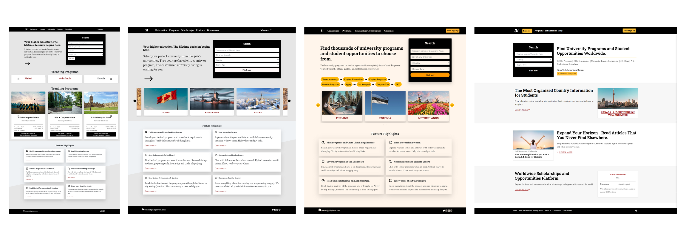
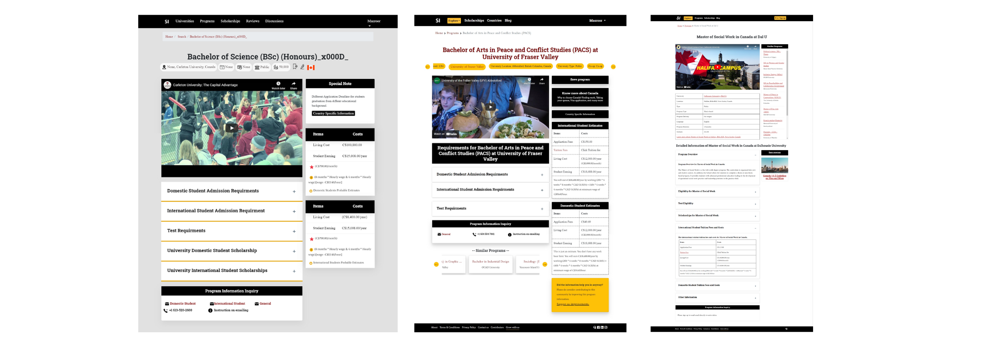
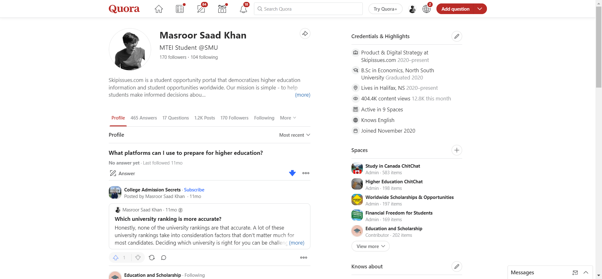

Inspiration to start it:
My childhood was quite nomadic, never staying in one place for more than 3 years, thanks to my father’s government job. While I had the opportunity to experience the upper echelon of society, the sad truth of the underprivileged caught my attention. When it came to studying abroad, the opportunities and information were limited, and most students didn’t have the clarity of the whole process or personalized roadmap.
During my high school years, I had the opportunity to help many students find scholarships and opportunities to study abroad. However, I always felt that there was a gap that needed to be addressed, and I wanted to do something about it!
Brief Overview of Skipissues
Problem:
Currently, students navigate their higher education journey in either of the following ways:
- Applying by themselves: This process is time-consuming and cumbersome. Even though students may save money by not going to a consultant, in most cases they either fail or spend too much time due to limited information and a lack of a personalized roadmap.
- Third-party help: Students most often seek help from agents who help through the application process for them to reduce the stress and time needed for the whole process. The cost can mount up to $6k and there is a high possibility of getting into fraud. My customer discovery, containing 150 in-person interviews, reveals that 90% of students who took the help of agents are unhappy.
Stats: Based on 2021 IRCC data, 2.5 million international students applied to Canadian Schools, but only 621k were successfully able to land in Canada. This means a whopping 76% failure rate
Solution: Build a two-sided platform, higher education admission process connecting universities with international students in one platform.
Skipissues Admin Walkthough
Key Highlights:
- Built the web application using Django, JavaScript, Bootstrap, HTML & CSS (~ 3k lines of code)
- Tried understanding user needs through creating product roadmap & built features based on user need
- Maintained web website server, and updated database while tracking specific user analytics
- Leveraged Heat-maps & A/B testing with tools such as Google Optimize 360 & Smartlook, resulting in 200% improved conversion, 50% more time spent, 30% decrease in bounce rate over 6 months
- Conducted 300+ keyword research, & content briefs based on user search intent for effective growth strategy
- Improved CRO & regularly audited website to keep track of robots.txt, sitemap, tracking code, indexing issues, etc.
- Optimized Organic (on-Page, off-page & technical SEO) & paid advertisements (FB ads, Quora ads, Google ads)
- Monitored website analytics performance bi-weekly through Google (Analytics, Tag Manager & Search Console)
- Worked with different mentors for customer discovery, finding product market fit, preparing customer journey map, the value proposition canvas, customer persona creation, etc & collaborated with SMU Entrepreneurship Centre & Dal U
Achievements:
- Organic growth resulting in all-time 127k page views, 12k monthly traffic, and $5k revenue, & 15k sign-ups
- Interviewed 150 persons to understand user needs and pitched in 5+ startup competitions
- 400k+ profile views in Quora & 20K+ views across other social media
Evolution of UI/UX - After A/B Testing 🤷

Evolution of Skipissues Homepage

Evolution of the Program Information Page
Results of A/B Tests
- JS was slowing down the page speed & removing it improved page speed, and conversion.
- Better user experince led to decreased bounce rate & improved time spent
Leveraged the Power of Quora

@400k Views Led to Many Opportunities
Google Search Console & Analytics
Strengths I didn't realize I had: Agility, Focus, Motivation & Eagle Spirit
Scope for Improvements:
- Customer discovery at a very early stage would have helped better
- Not to wait for the perfect version of a web application to go live, it’s a continuous process and it will always require improvements
- Following agile methodology from the very start would have helped organize tasks a lot better
Skipissues Code Walk-Through